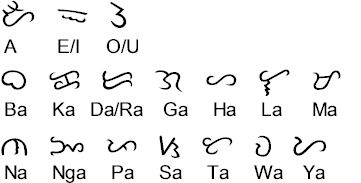
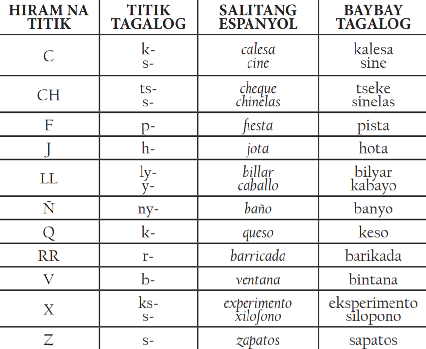

MULING BAYBAYIN HANGGANG SA ABAKADA
Maaring nagmula ang "Ortograpiya" ng wikang Filipino sa "Baybayin" na ginamit nagmula pa sa mga "katutubo"
na kanilang ginamit sa pagsulat.
Ayon sa mga misyonerong Espanyol, Ang mga tagalog nila ay may isang daan
bahagdan at ang mga matatanda't kabataan, lalake o babae ay marunong
mag basa at mag sulat sa wikang "Baybayin",
nag resulta sa pag limbag ng unang aklat sa Filipinas na pinamamagatang "Doctrina Christiana" (1593),
naglalaman ito ng mga "panalangin" at mga tuntunin ng pagiging isang "Kristiyano" sa wikang baybayin.
Dahil do'n, nasa tekstong Espanyol na may saling wikang Tagalog ang libro.
Ang tekstong iyon ay nasa alpabetong "Romano" gayunpaman ayun rin ay nakalimbag sa wikang Baybayin.
Nakasaad din sa libro ang Romanisasyong isinagawa sa palatitikang Filipino sa panahon ng Kolonisasyon ng Espanyol.
Naglalaman ng labingpitong(17) simbolo ang baybayin na mayroong labingapat(14) na katinig at tatlong(3) patinig. Ang mga letrang ito ay gaya neto:

Isinulat ni Jose Rizal ang Estudios sobre la lengua tagala na naipahayag noong 1899 matapos siyang mapalayas sa Dapitan. Kasama sa kanyang suhestiyon ang pag reporma sa sa alpabetong may labinlimang katinig at limang patinig sa Ortograpiyang Tagalog. Ang ginawa ni Lope K. Santos na "abakada" ay naging batayan ng mga titik na ginamit niya sa pag sulat ng Balarila(nalahathala, 1940). Ang katinig na "R" ay isinama sa orihinal na mga titik ng baybayin at ang mga patinig ay ginawang lima: A,E,I,O,U kaya dalawampu(20) na ang mga titik na ito. Ang abakadang ito ay lumaganap hanggang sa panahon ng "Wikang Pambansa" na wika ng Pilipino. Ang mga titik na ito ay naka linya sa paraang: A, B, K, D, E, G, H, I, L, M, N, NG, O, P, R, S, T, U, W, Y. Sa pag bigkas ng mga titik ito ay sinasamahan ng patinig na "A" gaya neto: A/ Ba/ Ka/ Da/....
Dahil sa matagal na pagtuturo sa mga titik E/I at O/U ito ay nabubukod katulad sa pag-aaral ng wikang Espanyol
Sa aklat na "Librong pagaaralan nang manga tagalog nang uicang Caftilla (1610)
" na isinulat ni Tomas Pinpin, Masikap niyang tinalakay dito ang pagpapaliwanag sa kanyang kababayan
ang kahalagahan sa pagkilala sa pagkakaiba iba sa tunog ng E at I at ng O at U,May mga salitang parehas ang baybay ngunit naiiba ang kahulugan Dahil sa mga naturang titik ng Espanyol.
Halimbawa:
- Pesa (Timbang) at Pisa (Dapurakin)
- Rota (Pagkatalo) at Ruta (Direksiyon ng dadaanan)
Sa matinding impluwensiya ng wikang Espanyol sa wikang katutubo sa Filipinas, Ang mga letrang: C, CH, F, J, LL, Ñ, Q, RR, V, X, at Z ay ay hindi isinama sa abakada. Nananatailing nasa Pantangi ang mga ito gaya ng Carmen, Fullon, Pacheco, Jaro, Cariño, Magallanes, Barrameda, Quirino , Zamboanga, Maximo, at Vizcaya. Subalit maraming salitang Espanyol ay tinapatan ng mga tunog titik ng abakada gaya ng paghiram ng mga salita sa wikang Espanyol.
Base sa gawa ni Lope K. Santos na Balarila, Ipinakita dito ang mga gabay sa kung paano gamiting ang ng at nang, kung bakit nagiging U ang O o kung kailan nagiging R ang D sa dulo ng mga salita. Ang Surian ng Wikang Pambansa ay nag tipon ng mga tuntuning makabuluhan matapos ang Ikalawang Digmaang Pandaigdig. "Mga Batayang Tuntuning Sinusunod Sa Pagsuring Aklat" ang pinamagat ni "Bienvenido V. Reyes" sa kanyang aklat na inihanda sa isang hiwalay at polyetong nakamimeograp na naging gabay ng mga guro, editor, at manunulat.
MAKABAGONG ALPABETONG NG FILIPINO
Noong dumaan ang pitumpong dekada, ang radikal na reoryentasyon ng pag papaunlad ay naramdaman sa Wikang Pambansa.Sa kautusang pangkagawaran ni Kalihim Jose Romero ang pagpapangalan sa Wikang Pambansa na "Pilipino" noong 1959 ay hindi naging sapat sa kanyang bisa. Sa panahong 1965 ang Wikang Pambansa ay nag palaganap ng isang "Puristang Tagalog" at dahil dito nag usig si Kongregista Inocencio Ferrer ng surian at ibang ahensya ng pamahalaan. Noong 1969, ang Madyas Pro-Hiligaynon Society, isang grupong pangwika ay nag petisyon sa hukuman na pigilan ang gawaing Surian.
Ang alpabeto ay sinuri muli, binawasan ang mga bagong titik, at sa panahong 1987 ay naging dalawampu't walo(28) ang mga gabay na titik sa Alpabeto at Patnubay sa Ispeling ng Wikang Filipino ng Wikang Pambansa. Ang mga titik na dinagdag na: C, F, J, Ñ, Q, V, X, at Z ay tinanggap. At nagpalaganap din ng isang "modernisadong alpabeto" na ipinababasa sa paraang ingles, na maliban sa "Ñ" na nagmula sa alpabetong Español gaya ng mga sumusunod:
A /ey/, B /bi/, C /si/, D /di/, E /i/, F /ef/, G /dyi/, H /eyts/, I /ay/, J /dyey/, K /key/, L /el/, M /em/, N /en/, Ñ /enye/, NG /endyi/, O /o/,
P /pi/, Q /kyu/, R/ar/, S /es/, T /ti/, U /yu/, V /vi/, W /dobolyu/, X /eks/, Y /way/, Z /zi/
Samantala, may nararamdaman namang pagbago sa ilang pinalaganap na tuntunin ng Balarila na maaring ituring batay lamang sa wika ng Tagalog at kailangang "paluwagin" upang maisaalang-alang ang mga layuning “pambansa” at “makabansa” ng wikang Filipino. May mga ipinasyang manatiling tuntunin ngunit may hindi na nais pairalin bilang tuntunin. Isang radikal na halimbawa ang dagdag na tuldik na pinagtibay na pansamantalang tinawag na patuldok, isang tuldik na kahawig ng umlaut at dieresis ( ¨ ) at schwa na matatagpuan sa:
- Meranaw
- Pangasinan
- Ilokano
- Cordillera
Upang luminaw ang mga sumusunod na katangian ng Ortograpiyang Filipino ay natalakay sa 2013 Forum:
- Ang paggawa ng panuto ay kailangang patnubayan ng matiyagang paglingon sa kasaysayan upang masipat ang mga tradisyon ng nagdaang paraan ng pagsulat ng wika.
- Kinakailangang ibatay ang mataas na modelo sa paggamit ng wika. Ang dagdag pagsuri ay tinutukoy sa nakasulat na panitikan upang panghugutan ng mga panutong Ortograpiko bukod sa pagmamatyag sa nagaganap na pagbabago sa wikang pabigkas.
- Kailangang episyente ang ortograpiya o kailangang nakatutugon ito sa mga pangangailangan sa pagsulat. Isang maliwanag na pag-angkop ng wikang Filipino ang pagdagdag ng mga titik para sa modernisadong alpabeto sa mga gawaing hindi na kayang tuparin ng lumang abakada.
- Kailangang pleksible ang ortograpiya upang magampanan ang lumalawak na gamit ng wikang Filipino. Ang pagsisikap na ipinagkaloob ng ibang katangian ng mga wikang katutubo ay makikita sa kasulukuyang gabay na wala sa batayang korpus ng abakada.
- Kinakailangan na ito aymadaling gamitin. Ang baybayin at abakada ay ipinagmamalaki ng bagay na ito. Gayunpaman, maipagmamalaki parin na madaling ituro at palaganapin ang kasulukuyang gabay sa ortograpiya ng wikang Filipino kahit na may pumasok na salimuot mula sa mga tunog ng modernisadong alpabeto.
sa panahong 1890 ay naipahayag ni Rizal sa kaniyang panukalang reporma sa ortograpiyang Tagalog na kinakailangan itong “maging agpang sa diwa ng ating wika at ng mga kapatid na wika nito”. Para sa atin ngayon, inaalis ng mga tuntunin ang hindi kailangang lumang tuntunin at hindi kailangang baryasyon para higit na madaling gamitin ang ortograpiya.
Ferndale Homes
17 Abril 2013